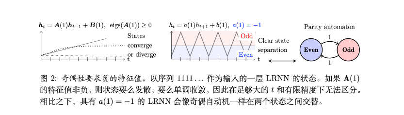
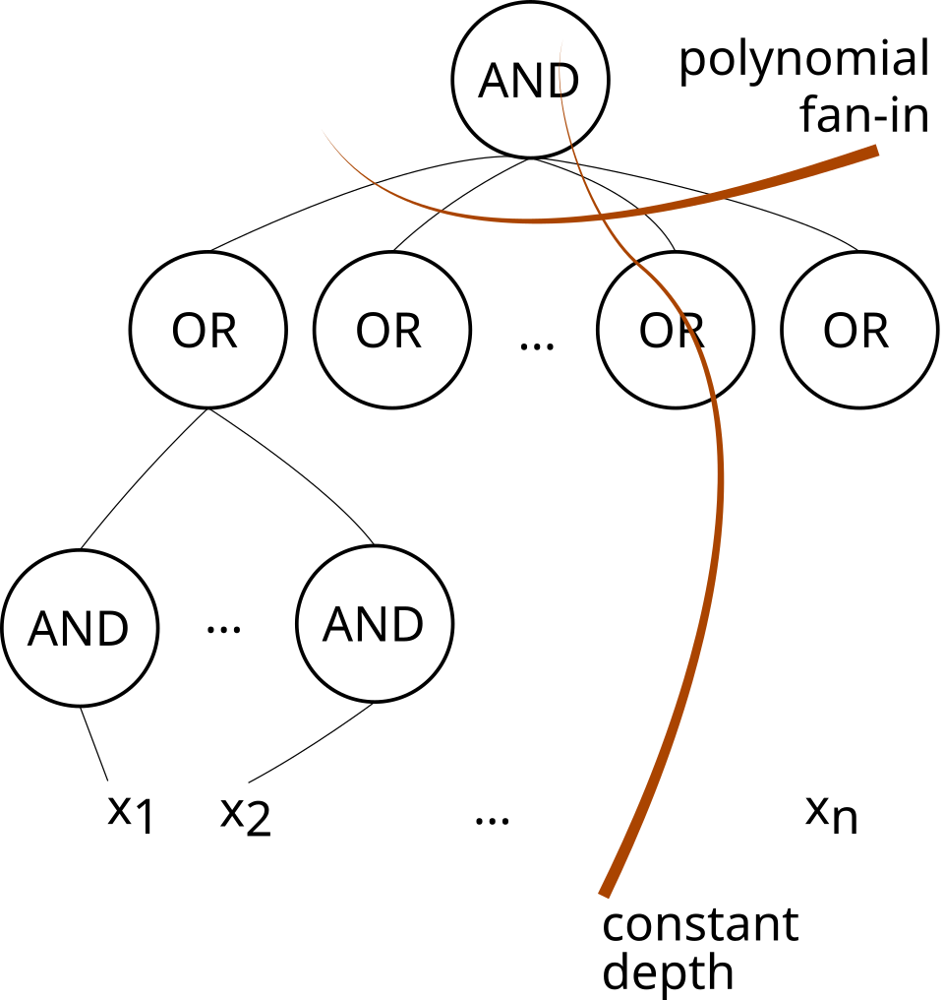
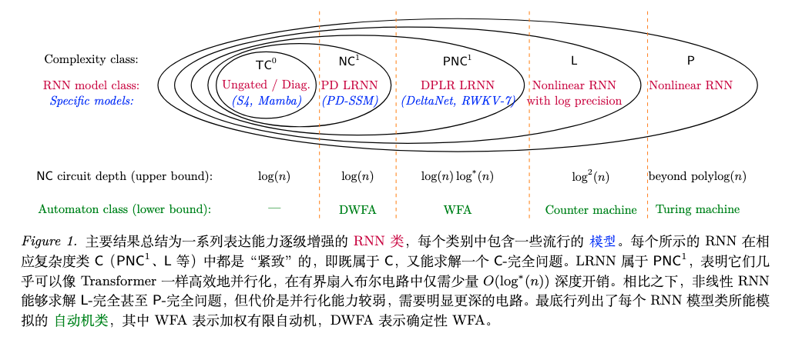
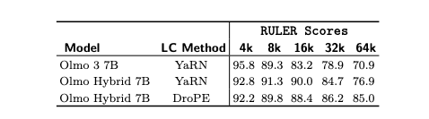
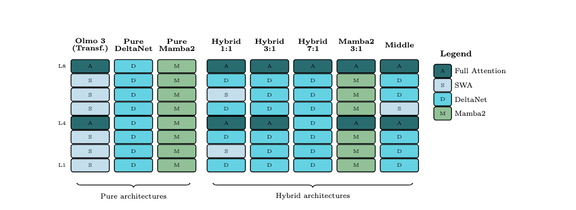
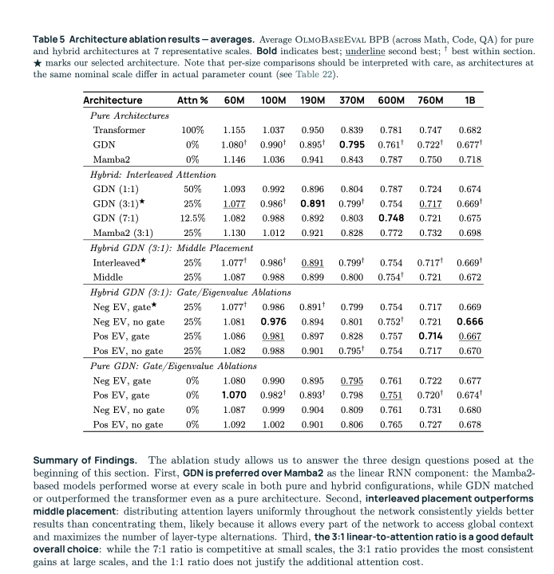

~/从电路复杂性理论的角度分析大模型的可并行性和表达能力--Olmo Hybrid 系列
Originally published on Zhihu 知乎 · 2026-06-12
虽然这两篇有先射箭再画靶之嫌，但还是给大伙提供了一个不同的视角来看 Linear RNN，值得一提
- https://arxiv.org/pdf/2603.03612 Why Are Linear RNNs More Parallelizable这篇文章通过电路复杂度理论分析各类 RNN，尤其是 Linear RNN 的并行能力和表达能力，为 Linear Attn 和 Hybrid Attn 的发展提供了理论指导。
- 在这篇文章发在 arXiv 上一个月之后，作者团队又发布了 Olmo Hybrid: From Theory to Practice and Back https://arxiv.org/pdf/2604.03444，并开源了训练代码和 log
本文使用了 Gemini 和 Qwen 辅助进行写作
前置知识
类 RNN 模型训练
类 RNN 的序列建模模型在排除 normalization 和 query/key 激活的情况下可以写成下列递推式
$S_t = S_{t-1} + v_tk_t^\top \in \mathcal R^{d_v \times d_k}, \ \ \ \ o_t=S_tq_t \in \mathcal R^{d_v}$
展开，可以将其写成向量形式（左）和矩阵形式（右）
$o_t = \sum_{i=1}^t (v_ik_i^{\top})q_i=\sum_{i=1}^{t}v_i(k_i^{\top}q_i)\in \mathcal R^{d_v}, \ \ \ \ \ \ \ \ \ \ \text O = (\text Q \text K^\top \odot \text M) \text V \in \mathcal R^{L\times d_v}$
其中 M 为 causal mask
训练时，序列需要从 $t=T$ 到 $t=0$ 做反向传播，每回传一步就要乘一次 $\mathbf A^\top_t$，最终初始梯度会被乘上 $T$ 次，如果 $\mathbf A$ 的选择不当，会导致梯度爆炸或消失：
- 对于线性递推系统 $\mathbf h_t=\mathbf{Ah}_{t-1}+\mathbf b_t$，反向传播时的梯度满足 $\frac{\partial \mathcal{L}}{\partial \mathbf{h}_0}=\left( \prod_{t=1}^T \mathbf A^\top \right) \frac{\partial \mathcal L}{\partial \mathbf h_T}$
一个解决方法是选择正交矩阵作为状态转移矩阵。正交矩阵的性质可以避免梯度爆炸/消失：
- 若 $\mathbf A$ 是正交矩阵（$\mathbf A^\top \mathbf A=\mathbf I$），那么对于任意向量 $\mathbf x$，其左乘正交矩阵对应的线性变换 $\mathbf {Ax}$ 相当于对 $\mathbf x$ 做旋转或镜面反射，只改变方向，不改变长度。正交矩阵的谱范数 $\|\mathbf A\|_2=1$。
线性代数:特征值，奇异值，谱范数，谱半径
首先回顾一下线代的几个概念：
- 特征值和特征向量：对于方阵$A$，若非零向量 $x$ 和标量 $\lambda$ 满足 $\lambda x = Ax$，那么 $x$ 是 $A$ 的特征向量，$\lambda$ 是对应的特征值。几何解释：用方阵 $A$ 去对整个空间做线性变换时，方向完全不变的是 $A$ 的特征向量，其被缩放的倍率是 $A$ 的特征值
- 奇异值和奇异向量：对于任意大小矩阵 $A$（不必是方阵），都可以分解为 $A=U\Sigma V$，其中 $U,V$ 是正交矩阵，$\Sigma$ 是对角线上全是非负实数的对角矩阵。$\Sigma$ 对角线上的元素 $\sigma_i$ 即奇异值。其几何意义可以理解为：矩阵将一个完美的单位球面扭曲成一个高维椭球时，那个椭球的形状。以二维平面上的情况为例，两个奇异值分别是最终得到的椭圆的长半轴和短半轴的长度。
谱范数的几何意义是矩阵对单位向量的最大拉伸倍数，即对单位向量乘上该矩阵一次，它最大会被拉伸到多长。不同方向的单位向量乘上矩阵会得到不同的结果，所有结果中向量长度的最大值是该矩阵的谱范数。数学上等于矩阵的最大奇异值 $\sigma_{max}$。正交矩阵的谱范数为 1。
区别于谱范数，另一个概念谱半径 $\rho (\mathbf A)$ 表示 $\mathbf A$ 所有特征值中绝对值最大的那个。其决定了把一个矩阵连乘无限次后向量会变成什么样。几何意义是：以原点为圆心，能够把所有特征向量包住的那个最小圆的半径。
假如有一个矩阵的谱范数大于1，但是谱半径小于1，将这个矩阵作用在一个圆上，我们可能看见前几步时圆被拉伸成更长的椭圆，但在无数步之后，其缩小直至看不见，消失在原点。
谱范数保持：指$\|\mathbf A\|_2=1$，意味着矩阵最多只能让向量保持原长，绝不会拉长向量。谱范数为 1 的矩阵不一定是正交矩阵，但足以保持梯度不爆炸了。 但是，若其奇异值包含小于 1 的值，这些 $\sigma_i<1$ 的方向会在反向传播时向着最大奇异值的方向坍缩，模型虽然没有崩溃，但实际上只剩下了学习一个维度的能力，无法捕捉复杂的长程依赖。 即然这样，保证所有奇异值都是 1 （即使用正交矩阵）是不是就行了？ 理论上可行，但其能够在没有门控机制的情况下轻松把梯度回传几千个时间步，但：
- 其“过目不忘”和 RNN 固定的隐藏状态大小是冲突的。随着状态数增大，过往的每个存入的 $(k,v)$ 对都被等比稀释了。
- 并且直接学习 $n\times n$ 的正交矩阵有高昂的计算与存储成本。
- 并且引入激活函数后，反向传播需要计算激活函数的导数，如果模型采用非线性的激活函数例如 $\tanh$，其导数范围 $(0, 1]$ 这可能进一步把导数缩到了小于 1 的范围。
现代 RNN 模型转向了线性 RNN：
- 使用纯线性的状态转移，不依赖 $\tanh$ 等非线性激活函数去包裹 $S_{t-1}$，可以避免因激活函数的导数让梯度消失。
- 引入衰减门控，选择性遗忘过往的记忆。
- 尝试分解正交矩阵，降低计算和访存开销，同时保持奇异值均为 1 以防止梯度爆炸或消失。
现代类 RNN 模型中的取舍
现代类 RNN 模型比如 GDN，尝试用广义 HouseHolder 矩阵通过 $k$ 次镜面反射的乘积来逼近任意正交矩阵，其在 $k << n$ 时仍然具有强表达能力。
为了让模型忘记不重要的信息，保留重要的信息，线代的类 RNN 模型引入了数据依赖的门控机制，比如 Mamba2: $S_t = \alpha_t S_{t-1} + v_tk_t^{\top}$
其中 $\alpha_t \in (0, 1)$ 是数据依赖的标量衰减项，随 t 变化。 可以定义累积衰减 $\gamma_j = \prod_{i=1}^j \alpha_i$ ，那么带门控的类 RNN 模型递推式同样可以换为向量形式和矩阵并行形式
$o_t=\sum_{i=1}^t(\frac{\gamma_t}{\gamma_i}v_ik_i^{\top})q_t=\sum_{i=1}^tv_i(\frac{\gamma_t}{\gamma_i}k_i^{\top}q_t), \ \ \ \ \ \ \ \ \ \ \ \text O = ((\text Q\text K^{\top})\odot\Gamma)\text V$
此处 $\Gamma \in \mathcal R ^{L\times L}$ 为衰减感知的因果掩码，其中 $\Gamma_{ij}=\frac{\gamma i}{\gamma j} , \ \ \ \ \ \text {if} \ i\ge j \$ ，否则 $\Gamma_{ij}=0$
DeltaRule
普通的 DeltaNet：写入新值，减去与当前的键关联的旧值
$S_t = S_{t-1} - v_{t}^{old}k_t^{\top } + v_{t}^{new}k_t^{\top}$
其中 $v_t^{old}=S_{t-1}k_t, \ v_{t}^{new} = \beta_t v_t + (1-\beta_t)S_{t-1}k_t$（与当前键关联的旧值可以用旧状态和键算出来，而新值是当前输入值与旧值的线性组合），$\beta_t \in (0,1)$ 为写入强度。
带入$v_{t}^{old}$和$v_t^{new}$后上式可以化为
$S_t=S_{t-1}-(S_{t-1}k_t)k_t^T+(\beta_t v_t + (1-\beta_t)S_{t-1}k_t)k_t^T=S_{t-1}(I-\beta_tk_tk_t^T)+\beta_tv_tk_t^T$
为什么 $v_t^{old}=S_{t-1}k_t$ 可以表示和当前键关联的旧值？推导如下：
- 假设当前为全零初始状态 $S_0$，我们写入了 $S_1=v_1k_1^\top$，那么未来我们使用 $k_1$ 查询旧值时，$S_1k_1=(v_1k_1^\top)k_1=v_1(k_1^\top k_1)=v_1$
- 推广到多条记忆的情况，假设之前写入了 $(k_1,v_1)$ 和 $(k_2,v_2)$，此时 $S_2=v_1k_1^\top+v_2k_2^\top$。如果此时用 $k_3$ 进行检索，会得到 $S_2k_3=v_1(k_1^\top k_3)+v_2(k_2^\top k_3)$，注意到 $k_x^\top k_y$ 其实表示的是向量 $k_x$ 和 $k_y$ 的余弦相似度（内积），这个值越大，就表示向量 $k_x$ 和 $k_y$ 越相关。当 $k_x$ 和 $k_y$ 相等时，这个结果为 1。当 $k_x$ 和 $k_y$ 正交，即毫无关联时，这个结果为 0。
从上述角度理解，$S_{t-1}k_t$ 是检索 $S_{t-1}$ 中所有与 $k_t$相关的 $v$ 的加权和。
扩展 DeltaNet：解锁状态追踪能力

相关研究表明，DeltaNet 中设置 $\beta \in (0, 2)$（允许特征值为负）可以解锁 DetlaNet 的状态追踪能力。 [图片] 从几何意义上理解，列向量左乘一个矩阵，相当于在空间内进行旋转（线性变换），沿特征向量缩放的系数就是矩阵的特征值。允许特征值为负相当于允许特征向量的方向反转。
数据类型
“精度”在此处表示的是，表示一个数值所需要的比特数与输入规模 $n$ 的渐进关系。这里用上两种精度
- 对数精度：一个数值具有对数精度，当且仅当表示该数值需要 $O(\log n)$ 个比特。举例：计算机中存储一个整型数值 n 需要 $\log n$ 位。
- 多项式精度：一个数值具有多项式精度，当且仅当表示该数值需要 $O(n^c)$ 个比特，其中 $c>0$ 为常数。通常算阶乘或者组合数之类的非多项式的值时才会用上。
电路复杂度理论
- 电路：由 AND，OR，NOT 等逻辑门组成，输入是 n 个 bool 变量，输出一个 bool 值。规模为逻辑门的数量，深度为输入到输出的最长路径
- Threshold Logic Unit：由称为 Linear Threshold Unit，是世界上最早的人工神经元。其输出0/1表示输入数据的加权和是否超过阈值。
- 换句话说，激活函数
- 有界扇入（bounded fan-in）：每个门只有固定数量的输入
- 无界扇入（unbounded fan-in）：门可以有任意多输入
- $NC^d$ ：Nick‘s Class，指可以被有界扇入布尔电路解决的问题类，其中：
- 电路规模为多项式大小 $O(n)$
- 电路深度为 $O(log^d n)$ ，d=0 时即为常数深度
- d 很小时，这类问题深度很浅，但输入很广，适合并行
- 电路看着像二叉树
- NC 类中的典型问题包括整数加减乘除，矩阵乘/求逆/行列式/秩，求最大匹配等
- $AC^d$ : Alternating Circuits
- 与 $NC^d$ 的定义类似，但允许无界扇入（但由于 Size 限制在多项式范围内，实际上扇入也是多项式范围）的 AND/OR 门，NOT 门仅限在初始输入中出现
- d=0 时电路图如下，图源wikipedia

- $TC^d$ ：Threshold Circuits
- 定义为深度为 d、多项式规模，无界扇入的布尔电路，电路门包括 AND，OR 和 Majority Gates（Threshold gates）。
- $NC^i \subseteq AC^i \subseteq TC^i \subseteq NC^{i+1}$ ，特定地， $NC^0 \subsetneq AC^0 \subsetneq TC^0 \subsetneq NC^1$
- $NC^0$ 无法计算需要依赖全部输入的函数，因为深度有限（常数）且有限扇入。举例：Parity 问题（数 01 序列中 1 的奇偶性，这个问题依赖全部 bit）
论文中提出：一种更为宽松的高效并行化概念允许用算术电路（包括0，1，和+，-，*。这样的电路产生一个函数 $f: \Sigma^n \rightarrow \mathcal R$ ），基于此可以定义 $PNC^1$ 类和 $ENC^1$ 类：
- $PNC^1$ 对应于语言类 $L$ ，存在一个由 $\{C_n\}_{n\ge0}$ 组成的对数深度算数电路族，其中 $C_n$ 表示 n 个输入结点的算术电路。使得对于所有的 $w \in \Sigma^n$ ， 我们有 $w \in L$ 当且仅当 $C_n(w) \gt 0$ （正性检查）。（通常也记做 $C_>NC$ ）
- 如果把 $PNC^1$ 类中的正性检查换为 $C_n(w)=0$ 的等式检查，我们就得到了 $ENC^1$ 类。（通常也记做 $C_= NC$ ）
$PNC^1$ 通常被认为“略高于” $NC^1$ ，因为目前已知的最佳的用 $NC$ 电路仿真 $PNC^1$ 的方法递归地使用了中国剩余定理（https://link.springer.com/chapter/10.1007/BFb0028801），深度为 $O(\log n \log^* n)$ 。
RNN 的分类
可以分为非线性 RNN，线性 RNN（LRNN） 和多层 RNN。
非线性 RNN
非线性 RNN 定义为输入和输出都是 d 维向量，RNN 通过 $\mathbf h_t = f(\mathbf h_{t-1}, \mathbf x_t)$ 计算一系列 d 维中间状态， $f$ 为非线性函数。比如 Relu RNN 是 $f(\mathbf h_{t-1}, \mathbf x_t)=\max \{\mathbf {Ah_{t-1}+Bx_t},0\}$ 。
线性 RNN（LRNN）
线性 RNN 即把 $f$ 换成线性函数。 $\mathbf S_t = A(\mathbf x_t) \mathbf S_{t-1}+b(\mathbf x_t)$ 。为了简洁起见，下面用 $\mathbf {A_t,b_t}$ 等表示 $A_t(\mathbf x_t)$ 等
- 这里 A 和 b 的参数化形式不一，参数化形式对内存和理论表达能力至关重要。
- 早期的 LRNN 探索了受约束的参数化形式，比如时不变矩阵（不随 t 变化）或对角矩阵（仅主对角线有值），但这些方法被证明会将表达能力限制在 $TC^0$ 范围内。（The Illusion of State in State-Space Models）。
- 新的 LRNN 尝试了非对角矩阵参数化，常见的两种是 DPLR 和 PD：
- 对角加低秩（DPLR）： $\mathbf A_t = \mathbf {D_t - k_t^Tv_t}$ ，其中 $\mathbf D_t$ 是对角矩阵。举例：RWKV-7 和 DeltaNet 是两个常见的且经过大规模训练验证的 DPLR 变体。
- 置换加对角（PD）： $\mathbf {A_t=P_tD_t}$ 。其中 $\mathbf P_t$ 是置换矩阵， $\mathbf D_t$ 是对角矩阵。
多层 RNN
根据当前的惯例，我们可以设想这些 RNN 被用作类似 transformer 架构。每个 RNN 层的输入是给定 n 个 d 维向量 $\mathbf {x_1,\cdots,x_n}$ ，首先应用 layernorm，并行计算每个头的输出 $\mathbf {y_1, \cdots, y_h}$ ，然后聚合输出。随后经过前馈网络得到该层最终输出。
各类神经网络的并行性

这里定义“可并行化”为可以用对数深度的电路复杂度类表示。
TLDR：Transformer 缺乏稳健表示状态跟踪任务的能力，而这类任务需要序列计算。线性 RNN 可以很好地处理序列计算任务，但其状态空间大小固定，在复制和召回任务上表现不佳。
- 传统的非线性 RNN 和 LSTM 属于非线性的多项式精度 RNN，其复杂度类属于 P-complete，如果 $NC \neq P$ ，那么其难以并行化（需要超多项式的深度）。
- 对数精度的非线性 RNN 是 L-complete 的。这意味着它们能求解更复杂的问题但并行化能力更弱，需要更深的电路。
- S4 和 Mamba 这类采用简单参数化形式的 RNN 属于 $TC^0$ ，理论上与 Transformer 属于同一复杂度类，但更复杂的参数化形式 LRNN 比如 DeltaNet 和 RWKV 能表达 $NC^1$ 完备的问题。
- Transformer 仅计算 $TC^0$ 中的函数，这意味着它们可以被深度 $O(\log n)$ 的 $NC^1$ 电路模拟。
论文证明了所有 LRNN （无论参数化细节如何）均可在 $PNC^1$ 类中被模拟。对于对数精度的 LRNN，其有一个更紧致的上界： $AC^0[ENC^1]$ （可由布尔 $AC^0$ 电路+把 $ENC^1$ 作为黑箱使用解决的语言）。
证明太多太长了，可以看原文的附录部分
从理论到实践再回到理论：Olmo Hybrid
作者团队在 6T tokens 上训练了 7B 参数的 3:1 混合模型 Olmo Hybrid。GDN 层与 Attention 层按 3:1 交错排列。发现如下：
- token 效率提升显著，仅需一半的 token 就能在 MMLU 上与使用了滑窗的 Olmo 3 7B 模型相当。
- 由于 Olmo Hybrid 除混合架构外与 Olmo 3 高度可比，作者认为这些结果为混合模型相较于 Transformer 模型优秀提供了强有力的证据。
- 除了大规模实验之外，作者还提出了理论结果以及完全受控的缩放研究，以解释这些性能提升。存在一些与代码评估相关的形式化问题，单独的 Transformer 或 GDN 都无法表达，但混合模型在理论上能够表示，并且在实践中可以学习到。
- 作者团队推测，DroPE 非常适合混合架构，因为 GDN 层提供了隐式位置编码。
Olmo Hybrid 架构和训练细节
75% 的层使用扩展的 GDN（ $\beta_t$ 被替换为 $2\beta_t$ ）。
Pretrain
采用和 Olmo 3 相同的训练配置和超参数。由于 GDN 在相同超参数下拥有比 Transformer 更多的参数，Olmo Hybrid 的头数相比 Olmo 3 7B 从 32 降到了 30，并且 query 和 key 头的维度被设置为 96，value 头维度设置为 192。
Midtrain
尝试了 YaRN 和完全移除 RoPE（DroPE）。
性能
预训练之后代码和通用回答方面性能相比 Olmo 3 7B 下降约 2%，但其它领域均领先。中段训练之后全面领先，这些优势在长上下文扩展后依旧保留。（虽然这里最长就 64k……）

不同架构和网络的消融实验
作者团队对 LRNN 架构该选哪种（Mamba2 OR GDN），应该如何混合（仅考虑层间混合的情况），应该按什么比例混合均做了消融实验：

可以看到他们并没有把 Kimi DeltaAttention 加入对比。结论是交错排列 Linear 和 Full 层比把 Linear 全排在一起强，1B 规模内 3:1 是较优的比例，更小的规模上 7:1 可能更好，但扩大规模后比不上 3:1。至于 1:1 混合，其收益配不上开销。

// EOF